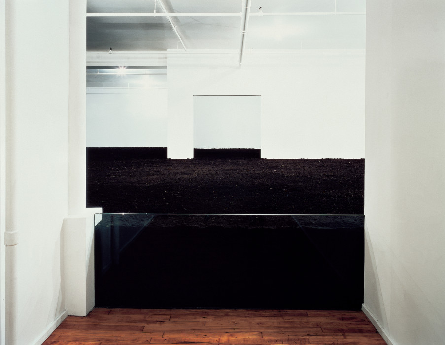
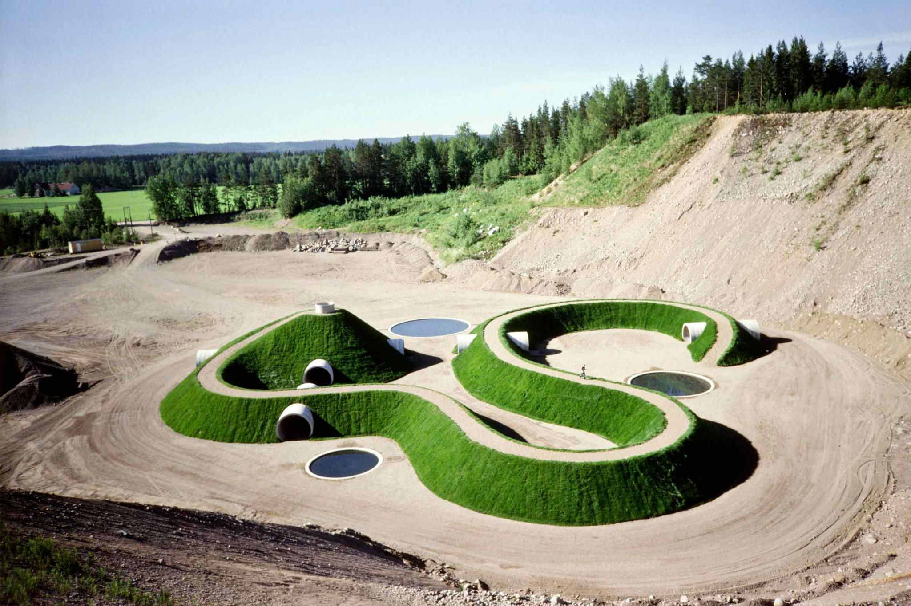
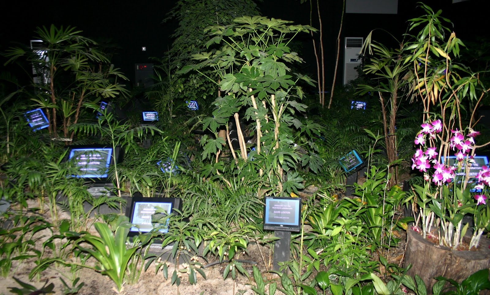

Cras vestibulum, ligula vitae volutpat tincidunt, nunc odio gravida urna,
a sagittis nisi ligula ut ligula. Phasellus sit amet quam a felis
facilisis laoreet. Curabitur feugiat elit id diam accumsan, sit amet
facilisis nulla varius. Donec non augue sed orci euismod bibendum. Aliquam
erat volutpat. Nulla porttitor, felis sit amet varius tincidunt, velit
eros efficitur magna, ac euismod neque purus et magna. Ut vel erat non
purus venenatis convallis. Suspendisse potenti. Duis accumsan felis sed mi
tincidunt, nec faucibus nunc fermentum. Aenean feugiat auctor ipsum, ac
vehicula velit faucibus nec. Cras quis sapien vel erat convallis pharetra.
Aliquam erat volutpat. Donec nec felis arcu.!


